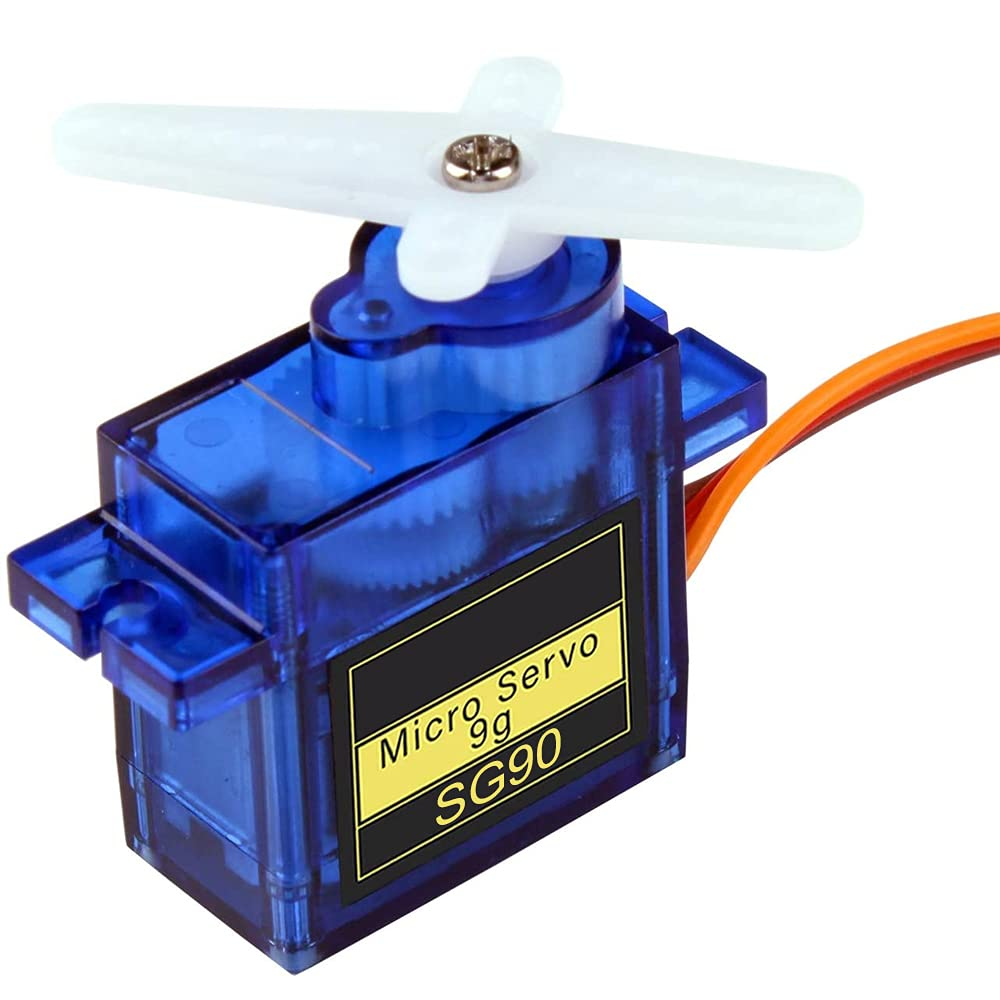
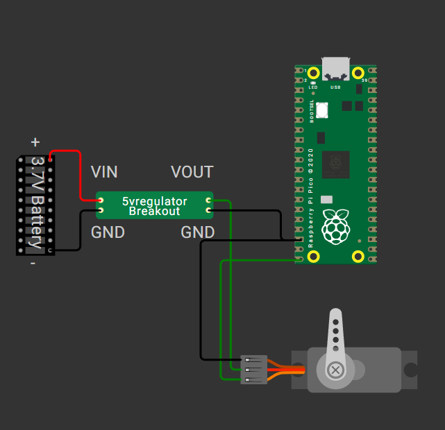
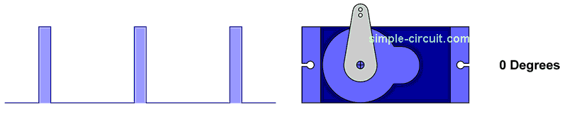

What You Need
Raspberry Pi Pico or Pico W (USB connected)
Thonny IDE installed on your computer
1x SG90 or MG90S 180° servo motor
3.7V Li-ion battery (e.g., 1x18650 cell)
5V regulator module (for stable servo power)
Breadboard and jumper wires
💡 If you haven't installed Thonny or set up MicroPython, go back to Fundamental Course - Module 1 to complete that step.
Step-by-Step Path
🔌 Step 1: Wiring Instructions & Pinout
Connect your 180° servo motor to the Raspberry Pi Pico as shown below. This setup is essential for testing and controlling the servo in your 4DOF robot arm project.
| Servo Wire | Connect To |
|---|---|
| Orange (Signal) | GP15 (or any PWM-capable GPIO) |
| Red (VCC) | External 5V Battery Positive |
| Brown (GND) | Shared Ground with Pico and Battery |
⚠️ Important: Make sure the ground of the external battery is connected to the ground of the Pico (GND pin).

180° Servo Motor (SG90/MG90S) Servo Motor Pinout
Servo Motor Pinout
 Raspberry Pi Pico Pinout
Raspberry Pi Pico Pinout

Servo Circuit Diagram💡 Step 2: Understand PWM Control for Servos
- PWM frequency: typically 50 Hz (20ms period)
- 0° angle ≈ 0.5ms pulse (2.5% duty)
- 90° angle ≈ 1.5ms pulse (7.5% duty)
- 180° angle ≈ 2.5ms pulse (12.5% duty)
In MicroPython, PWM.duty_u16() is used where 0 = 0% duty and 65535 = 100% duty. So, 7.5% ≈ int(65535 * 0.075) ≈ 4915.

How PWM Duty Cycle Relates to Servo Angle🧪 Step 3: Test Code – Move Servo to 0°, 90°, 180°
from machine import Pin, PWM
from time import sleep
servo = PWM(Pin(15)) # use GP15
servo.freq(50) # 50 Hz for standard servo
def move_servo_us(us):
duty = int(us * 65535 / 20000) # convert microsecond to 16-bit PWM
servo.duty_u16(duty)
# Move to 0 degrees (~500us)
move_servo_us(500)
sleep(1)
# Move to 90 degrees (~1500us)
move_servo_us(1500)
sleep(1)
# Move to 180 degrees (~2500us)
move_servo_us(2500)
sleep(1)
🧠 Tip: Some servos may respond better between 600–2400µs depending on brand.
🧰 Step 4: Create a Reusable Angle Function
Instead of microsecond input, use degrees:
def move_servo_angle(angle):
min_us = 500
max_us = 2500
us = min_us + (max_us - min_us) * angle / 180
move_servo_us(us)
# Example usage:
for angle in [0, 90, 180, 90, 0]:
move_servo_angle(angle)
sleep(1)
✅ Learning Point: You now know how to define and call functions in MicroPython. This prepares you for modular coding and reusability in future modules.
🛠️ Step 5: Troubleshooting Tips
- Servo twitches or doesn't move?
- Is your 5V supply strong enough (≥1A)?
- Is your ground shared with Pico?
- Use a capacitor (100µF–470µF) across VCC/GND near the servo.
- Increase
sleep(1)delay between commands.
Complete Tutorial Video
What you'll learn in this video:
- Overview of the 4DOF robot arm project and Module 6 goals
- How to wire a 180° servo motor to the Pico using a 3.7V Li-ion battery and 5V regulator
- Understanding servo pinouts and Pico pin mapping
- How PWM controls servo angle (with visual explanation)
- Step-by-step code walkthrough for testing the servo in MicroPython
- Common troubleshooting tips and best practices
Quick Recap
- ✅ Servo basics
- ✅ Wiring for external power
- ✅ Using PWM in MicroPython
- ✅ Writing and calling a function
- ✅ Testing movement angles
🎯 What’s Next?
In Module 7, you’ll extend this single-servo code to control all 4 servos of the mini robot arm and map each one to a specific GPIO pin. You’ll also learn how to organize code for each joint.